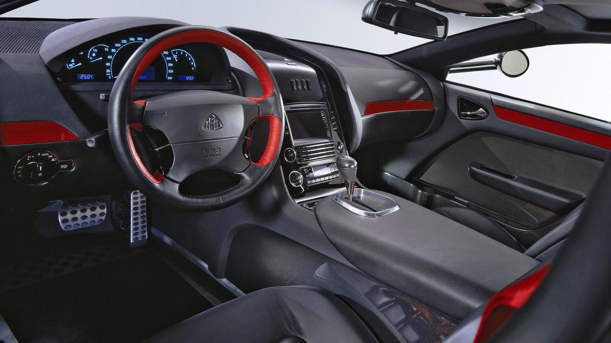
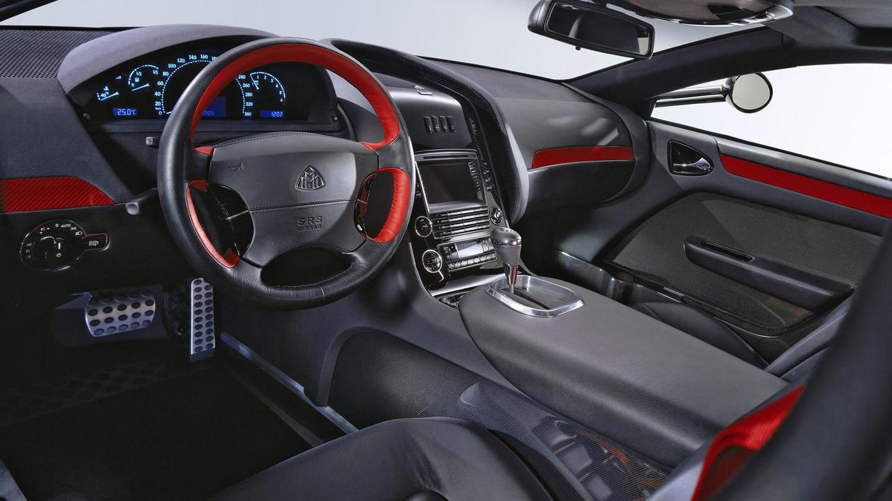

У гривнях найдорожча машина у світі коштує майже 192 мільйони, але для музиканта, що володіє статком в 100 млн $, покупка не виглядає чимось неординарним. Важить авто майже 2,7 тонн і здійснює розгін до сотні кілометрів за 4,4 секунди. Рекордні показники забезпечує задньопривідний 6-літровий високопотужний двигун V12, що ховається під хижим подовженим капотом. Елегантна велич помпезного лімузина в поєднанні зі стильною красою купе – ось, як виглядає найдорожча машина у світі на звичайній міській дорозі. І хоча Майбах дебютував на Туринській виставці в далекому 2005 році, до цього часу його рекордна вартість не побита.
 
